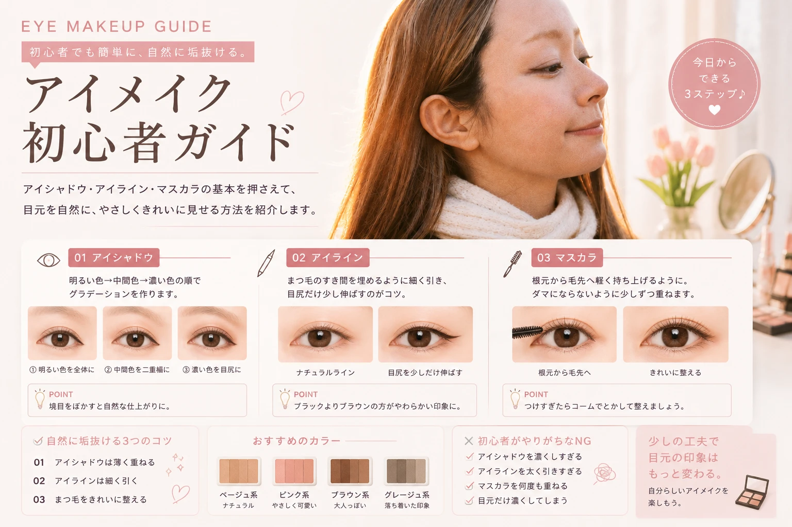

アイメイクは
難しくない
アイメイクは、 アイシャドウ・アイライン・マスカラの 3つを基本にすると覚えやすくなります。
最初から完璧を目指さず、 「薄く・少しずつ」を意識するのがポイントです。
初心者の基本
濃くするより、 目元に自然な立体感を作ることを意識しましょう。
まずは
アイシャドウ
初心者なら、 ベージュ・ブラウン・ピンク系など 肌になじみやすい色から始めると使いやすいです。
明るい色
まぶた全体に薄くのせます。
中間色
二重幅や目のキワに少し重ねます。
濃い色
目尻やキワに少量だけ使います。
濃くなったら？
ブラシや指で境目をぼかすと、 自然な仕上がりになります。
アイラインは
「細く」が基本
初心者がアイラインを太く引くと、 目元が重く見えることがあります。
まつ毛のすき間を埋める
目尻だけ少し伸ばす
一気に引かず少しずつ描く
ナチュラルにしたいなら
ブラックよりブラウン系を選ぶと、 やわらかな印象に仕上げやすくなります。
マスカラで
目元を仕上げる
マスカラは、 まつ毛を整えて目元をはっきり見せるためのアイテムです。
根元から
ブラシをまつ毛の根元に当てます。
毛先へ
根元から毛先へ軽く動かします。
つけすぎない
ダマになったらコームなどで整えます。
自然に垢抜ける
3つのコツ
アイシャドウを薄く重ねる
アイラインを細くする
まつ毛をきれいに整える
引き算も大切
「もっと足したい」と思ったときこそ、 一度鏡から少し離れて全体を見るのがおすすめです。
目の形に合わせて
調整しよう
同じアイメイクでも、 目の形によって見え方は変わります。
一重
目を開けた状態でも見える位置を意識して アイシャドウを入れます。
奥二重
目のキワを中心に色を置くと すっきり見せやすくなります。
二重
色を重ねすぎず、 二重幅を活かすと自然に仕上がります。
色選びで
印象を変える
ナチュラルで使いやすい。
目元を自然に引き締めやすい。
やわらかくかわいい印象に。
大人っぽく落ち着いた印象に。
自分のパーソナルカラーも参考にすると、 色選びがさらに楽しくなります。
→ パーソナルカラー初心者ガイドを見る
初心者は
この順番でOK
アイシャドウ
肌になじむ色を薄く。
アイライン
まつ毛のすき間を埋める。
マスカラ
まつ毛を整える。
全体を確認
濃すぎないか鏡でチェック。
初心者がやりがちな
失敗
アイシャドウを濃くしすぎる
アイラインを太く引きすぎる
マスカラを何度も重ねる
目元だけ濃くしてしまう
迷ったら薄く
足すことは後からできます。 最初は薄めに仕上げると調整しやすくなります。
最低限そろえたい
アイメイク用品
アイシャドウ
アイライナー
マスカラ
アイシャドウブラシ
すべて高価なものをそろえる必要はありません。 まずは使いやすいプチプラアイテムから 試してみるのもおすすめです。
→ プチプラコスメを見る
目元を少し変えるだけで、
印象は変えられる。
アイメイクは、 アイシャドウ・アイライン・マスカラの 基本を覚えるだけでも十分です。
自分の目の形や好きな雰囲気に合わせて、 少しずつ調整していきましょう。
少ない予算で、
最大限かわいく。
無理なく楽しめる美容情報を わかりやすく紹介します。